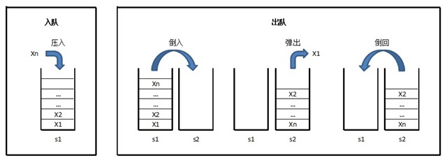

☰ 目录
链接
牛客OJ：用两个栈实现队列
九度OJ：http://ac.jobdu.com/problem.php?pid=1512
GitHub代码： 007-用两个栈实现队列
CSDN题解：剑指Offer--007-用两个栈实现队列
您也可以选择回到目录-剑指Offer--题集目录索引
题意
题目描述
用两个栈来实现一个队列，完成队列的Push和Pop操作。 队列中的元素为int类型。
分析
始终维护s1作为存储空间，以s2作为临时缓冲区。
见下面示意图：

上述思路，可行性毋庸置疑。但有一个细节是可以优化一下的。即：在出队时，将s1的元素逐个“倒入”s2时，原在s1栈底的元素，不用“倒入”s2（即只“倒”s1.Count()-1个），可直接弹出作为出队元素返回。这样可以减少一次压栈的操作。约有一半人，经提示后能意识到此问题。
上述思路，有些变种，如：
相对于第一种方法，变种的s2好像比较“懒”，每次出队后，并不将元素“倒回”s1，如果赶上下次还是出队操作，效率会高一些，但下次如果是入队操作，效率不如第一种方法。我有时会让面试者分析比较不同方法的性能。我感觉（没做深入研究），入队、出队操作随机分布时，上述两种方法总体上时间复杂度和空间复杂度应该相差无几（无非多个少个判断）。
但是每次倒来倒去的还是效率不太好，因此我们思考出了如下的变种
始终维护s1作为输入栈，以s2作为输出栈
代码
#include <iostream>
#include <stack>
using namespace std;
// 调试开关
#define __tmain main
#ifdef __tmain
#define debug cout
#else
#define debug 0 && cout
#endif // __tmain
class Solution
{
public:
void push(int node)
{
stackIn.push(node);
}
int pop()
{
int node = -1;
// 两个栈都是NULL的时候，整个队列为空
if(this->empty( ) == true)
{
debug <<"整个队列为NULL" <<endl;
return -1;
}
else
{
// 否则队列中有元素
// 此时分两种情况，
// 当输出栈不为空的时候, 直接将输出栈中元素弹出即可
// 当输出栈为NULL, 但是输入栈不为空的时候，需要将输入栈的元素全部倒入输出栈中
if(stackOut.empty() == true) // 此时输出栈为空, 输入栈必不为空
{
// 此时缓冲栈（输出栈）中没有元素
// 需要将输入栈中的元素倒入输出栈
// 看输入栈中有没有元素
// 否则将元素从输入栈导入输出栈
while(stackIn.empty( ) != true)
{
node = stackIn.top( );
stackIn.pop( );
stackOut.push(node);
debug <<node <<"导入输出栈" <<endl;
}
}
node = stackOut.top( );
stackOut.pop( );
debug <<"队头元素" <<node <<endl;
}
return node;
}
bool empty( )
{
return (stackIn.empty() == true && stackOut.empty() == true);
}
private:
stack<int> stackIn;
stack<int> stackOut;
};
int __tmain( )
{
Solution solu;
solu.push(1);
solu.push(2);
solu.push(3);
solu.push(4);
int node;
while(solu.empty() != true)
{
cout <<solu.pop( );
}
return 0;
}